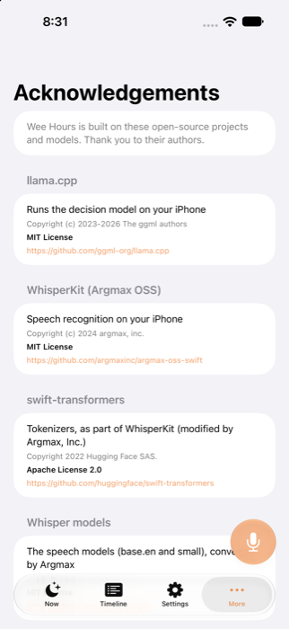
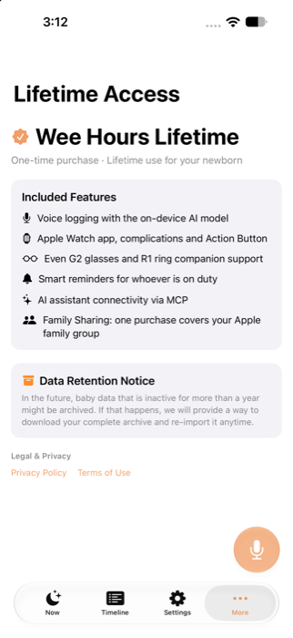
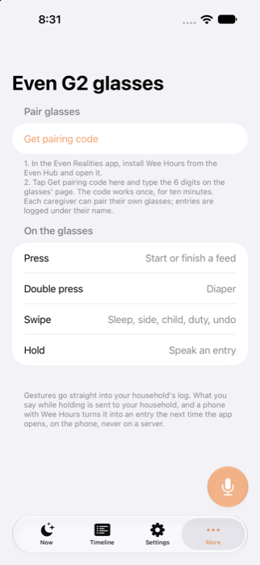

Release walkthrough · 2026-10-28
Releasing Wee Hours to the App Store
An earlier scan found 7 blockers, 5 should-fixes and 6 smaller items. Everything that could be fixed without you is fixed: account deletion now deletes the login, the Support, Privacy and Terms pages match a one-time purchase with Family Sharing, the privacy manifest is valid, the app has Acknowledgements and What's New has 1.0.0. App Store Connect's draft is now 1.0.0 with its text, category, age rating (4+) and review notes filled in. What's left needs your accounts, your money or your judgment. It's 12 steps in §3, and the order matters.
Verified
- Tests:
npm run test:weehours(62 tests, including 6 new ones for deletion and the Apple client secret), the web typecheck and build, and an iOS simulator build all pass. - Deletion end to end against the local Supabase: the endpoint answered
ok, the old session got 403, the user row was gone fromauth.users, and a bad token got 401. - In the app (iPhone 17 Pro Max simulator): What's New 1.0.0, the Family Sharing line, Acknowledgements, and the glasses screen without the trial message (screenshots in §1).
- App Store Connect: every write returned 200/201; the age rating computed as
FOUR_PLUS.
Not verified
- A physical iPhone: it was unavailable to
devicectl, so nothing ran on hardware. Deleting from the app with a real Sign in with Apple account wasn't tried; do it with a test account in step 10. - Apple revocation against Apple: tested with a stubbed Apple and a generated key, not with Apple's servers (it needs your key).
- Paid Apps agreement, tax and banking: not visible to the API.
What I fixed
One local commit on main (not pushed). Pushing it deploys the site and Worker; the app changes ship with the 1.0.0 build.
How "Delete account & data" works now
The household goes first, as before: files, then delete_household. Then the app calls the Worker's new POST /api/account/delete with its session. The Worker revokes the user's assistant grants, revokes the Sign in with Apple token when it can, and deletes the auth user; every Wee Hours row that points at the user cascades with it. The account page on the site does the same, minus the Apple step.



What App Store Connect has now
Written with the team's App Store Connect API key on 2026-10-28. All of it is draft data on an unsubmitted version: read it on the version page and change anything you like.
The description that's in there now
Wee Hours is a baby log you can use with your hands full. Say "finished the bottle, about 90 ml" or "dirty diaper" and it's logged. Speech is transcribed and understood on your iPhone, works offline, and the audio never leaves your phone. LOG ANY WAY • Voice, from the app, the Speak widget, Control Center or Siri • One tap on the Now screen • Your watch: buttons, or tilt mode with just the watch arm • Even Realities G2 glasses and R1 ring ONE LOG FOR THE WHOLE HOUSEHOLD • Partners and caregivers see every entry within seconds • "Fed 2h40m ago · left side next" at a glance • Who's on duty, shift notes and gentle reminders • Twins and siblings, and the weeks before birth (kick counts) TRACK WHAT YOU NEED Feeds (bottle, breast, pumping, solids), diapers, sleep, growth, and optional care, health and activity entries like baths, medication, temperature and tummy time. Turn on only what you use. YOURS • Use it without an account, or sign in to sync • Photos on entries, CSV export • Connect your own AI assistant over MCP to ask about the log • No ads, no tracking Wee Hours records what happened. It doesn't give medical advice.
Age rating answers: every content question "None", every yes/no "No", except health or wellness topics: Yes (the app logs medication, temperature and symptoms). Medical or treatment information: None, since the app gives no advice. Apple computed 4+. The answers are your attestation, so look them over in App Information → Age Rating.
Your steps, in order
Steps 1–8 can happen in any order on the same day; 9 needs 2; 11 needs all the rest.
- Confirm the price model. Paid with Family Sharing is what the text now says. Pick the price tier (the old site had $79.99 for lifetime; nothing in the repo decides the new one) and write it in the Billing row of
projects/weehours/docs/decisions.md. That row still describes the old subscription. - Look over the commit and push it. Pushing deploys the Support, Privacy, Terms and account pages and the Worker's deletion endpoint (Cloudflare Workers Builds). Wait for
weehours-ci.ymlto go green:cut_release.shrefuses a red or unpushed main.git show --stat HEAD git push
The rootCLAUDE.mdhas an uncommitted change from other work that isn't part of this commit; commit or stash it, becausecut_release.shrefuses a dirty tree. - Create a Sign in with Apple key and give it to the Worker, so deletion can revoke Apple tokens (Apple asks for this under 5.1.1(v)). In the developer portal, Certificates, IDs & Profiles → Keys: +, name it "Wee Hours SIWA", tick Sign in with Apple, Configure → primary App ID
com.hejitech.weehours, register, and download the.p8(it downloads only once). Then, fromprojects/weehours/services/web:npx wrangler secret put APPLE_SIWA_KEY_ID --env production npx wrangler secret put APPLE_SIWA_PRIVATE_KEY --env production < AuthKey_XXXXXXXXXX.p8
Without it, deletion still deletes the login and just skips the revocation. The privacy policy now says the app asks Apple to revoke access, so do this step before launch. Store the.p8with your other keys, not in the repo. - Business (App Store Connect → Business): the Paid Apps agreement is Active, and tax forms and a bank account are filled in. A price can't be set until it is.
- Pricing and Availability (the app → Pricing and Availability): set the price, keep all countries or pick some, and turn on Family Sharing. It can't be turned off again for this app, which is fine for a one-time purchase.
- App Privacy (the app → App Privacy): enter the answers in §4 and press Publish. The API can't write this form.
- App Review contact (version page → App Review Information): your first and last name, phone and email. I left these empty; they're personal and Apple uses them to call. Notes are filled in, and "Sign-in required" is off.
- Screenshots. The version page needs 6.9" iPhone (1320 × 2868) and, because the app has a watch app, Apple Watch shots. The script now shoots at 6.9" and skips What's New. It ran, but the local test household's log is thin (one feed, an old diaper), so the shots aren't good enough for the store. Your iPhone 13 is 6.1", a size the store doesn't take, so shoot on the iPhone 17 Pro Max simulator (created for this; 1320 × 2868) with a Release build signed in to your own account, so the log is real:
cd projects/weehours/apps/ios && xcodegen generate xcodebuild -project WeeHours.xcodeproj -scheme App -configuration Release -destination "platform=iOS Simulator,name=iPhone 17 Pro Max" -derivedDataPath .derived build CODE_SIGN_IDENTITY=- CODE_SIGNING_REQUIRED=NO xcrun simctl boot "iPhone 17 Pro Max"; open -a Simulator xcrun simctl install "iPhone 17 Pro Max" .derived/Build/Products/Release-iphonesimulator/WeeHours.app
Sign in (Google works in the simulator; Apple needs an Apple Account signed in to the simulator), then ⌘S in Simulator saves each screen. Or write in your notes "seed a realistic demo week and re-run the screenshot script", and an agent can do it on the local stack. Watch: open the watch app on a watch, then press the side button and Digital Crown together, or usexcrun simctl io <watch udid> screenshoton a Series 11/12 46 mm simulator. - Cut 1.0.0, once CI is green after step 2:
scripts/cut_release.sh weehours 1.0.0 --dry-run # look first scripts/cut_release.sh weehours 1.0.0 --watchThe TestFlight run waits for Apple's verdict and fails if the build is rejected. The release also attachesweehours-glasses-1.0.0.ehpkfor Even Hub (separate, by hand). - Try 1.0.0 from TestFlight on your iPhone. Sign in with Apple, log by voice and tap, check the watch, open Settings → About → Acknowledgements. Then sign in with a second, test Apple Account (not your own; deleting it also ends its Waypack sign-in) and use Delete account & data. You should see the Apple sheet, then the sign-in screen. On the web,
/account/with that account should no longer sign in to the old data. - Choose the build and submit. On the 1.0.0 version page: Build → replace
202610151828with the 1.0.0 build, upload the screenshots, check the text, then Add for Review → Submit. - After approval: release it (the version is set to release automatically after approval; switch to manual first if you want to pick the day). Then put the store link on the site:
VITE_APP_STORE_URL=https://apps.apple.com/app/id6823293298inprojects/weehours/services/web/.env.production, and push.
App Privacy answers
These now match the manifest (apps/ios/Shared/PrivacyInfo.xcprivacy, fixed in this commit) and the privacy policy. For every row: purpose App Functionality only, not used for tracking. First question: "Do you or your third-party partners collect data from this app?" → Yes.
How a build gets to the App Store
The pipeline doesn't change; the right half is the browser work above.
The Wednesday TestFlight run keeps uploading builds of the same version. A build already attached to the submitted version stays attached.
Left for later, on purpose
| Item | Why I didn't change it | When |
|---|---|---|
| 759 MB download | The 216 MB multilingual Whisper is bundled on purpose (commit 74597af8: Spanish and Chinese work offline right after install). Leaving it out would bring the download near 540 MB; SpeechModelManager already downloads it when it's missing. | Your call; not a review issue |
Billing functions in the database (my_entitlement, record_purchase, entitlements) | The iPhone app and account page no longer call them, but the Android app (apps/android/core/…/Sync.kt) still does, and dropping them needs a production supabase db push. | When Android drops billing too |
Local networking in Release (NSAllowsLocalNetworking) | Only reaches the local network; reviewers don't flag it. | Any time |
| ITMS-91053 (undeclared required-reason API) | I added the file-timestamp reason (C617.1) WhisperKit needs to the manifest, so new uploads should be clean. Old emails, if any, only exist in your inbox. | Glance at your inbox |
| Support address | The site now shows info@hejitech.com, the HEJI address G2 Digest and ToddlerCam use, instead of Waypack's. A Wee Hours address needs a domain. | When Wee Hours gets a domain |
Checklist
- Price model confirmed (paid + Family Sharing) and tier pickeddecisions.md Billing row updated
- Commit reviewed and pushed; weehours CI green
- Sign in with Apple key created; both Worker secrets set
- Paid Apps agreement active, tax and banking done
- Price, availability, Family Sharing on
- App Privacy answers entered and published§4
- App Review contact name, phone, email
- Listing text, category and age rating looked over§2
- Screenshots uploaded: 6.9" iPhone and Apple Watch
- 1.0.0 cut; TestFlight run green
- Tried on the iPhone, incl. deleting a test Apple Account
- 1.0.0 build chosen; submitted for review
- Approved and released; store link on the site
If something goes wrong
| What you see | Likely cause | What to do |
|---|---|---|
cut_release.sh refuses | Unpushed commit, or CI still running/red | Push, wait for weehours-ci.yml; red CI: the heji-fix-ci skill |
| The 1.0.0 build isn't offered on the version page | Still processing | The TestFlight run waits for VALID; refresh after it's green |
| Upload accepted, build never appears | Rejected while processing (e.g. ITMS-90626) | release_testflight.sh fails the run with Apple's reason; fix and cut 1.0.1 |
| "Delete account & data" says "Your data was deleted, but your sign-in wasn't" | The Worker wasn't deployed yet, or the service key secret is missing | Check the Workers Builds deploy of the push; tap Delete again (it's safe to repeat) |
| Deletion works but Apple still lists Wee Hours under "Sign in with Apple" apps | The Worker has no Apple key yet, or the key isn't tied to com.hejitech.weehours | Step 3; the endpoint's reply says apple_revoked: false when it couldn't revoke |
| Can't set a price | Paid Apps agreement or banking not active | Business page |
| Rejection 2.3 / 3.1.1 | Family Sharing promised but off, or "Lifetime" on a free app | Make Pricing match the text (or ask an agent to change the text) |
| Rejection 2.1 (needs hardware) | Reviewer can't test glasses or ring | Review notes already say they're optional; offer a short video in the Resolution Center |
| Rejection 5.1.2 / privacy mismatch | App Privacy form differs from the manifest | Use §4 exactly |
Your notes
Questions, corrections, decisions (for example a different price model). Saved in this browser. Copy summary puts the whole report, your ticks and these notes on the clipboard for any agent.
Report: reports/2026-10-28-weehours-app-store-release · serve with script/serve.sh